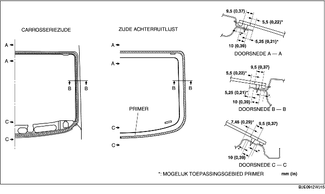
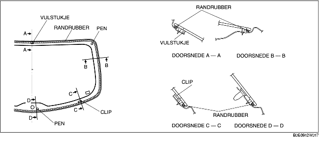
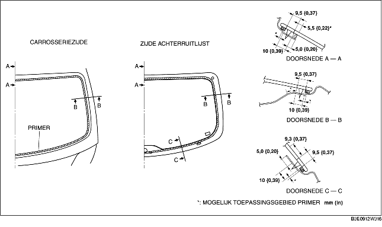

1. Snijd de oude kitlaag langs de omtrek van de sponning met een hobbymes weg tot de laag nog 1-2 mm {0,04-0,07 in} dik is.
2. Als de kitlaag ergens langs de omtrek helemaal is losgekomen, ontvet deze plaats dan, breng er primer op aan en laat deze ongeveer 30 minuten drogen. Breng vervolgens een laag kit aan van 2 mm {0,08}.
3. Reinig en ontvet ongeveer 50 mm {1,97 in} van de rand van de ruit en het hechtvlak op de carrosserie.
4. Als een achterruit wordt hergebruikt, plaats dan de achterruitlijst aan de hand van de volgende procedure.
5. Gebruik de glasprimer alleen voor de ruit en de carrosserieprimer alleen voor de carrosserie en de lijst zoals is aangegeven in de afbeelding. Laat de primer ongeveer 30 minuten drogen.

6. Breng op de aangegeven plaatsen ruitenkit aan op de ruit.
7. Plaats de paspennen in de carrosserie en plaats de achterruit.
8. Druk tegen de pennen tot de borglippen vastklikken in de carrosserie.
9. Druk de ruit langs de gehele omtrek aan en zorg ervoor dat de speling overal aan de specificaties voldoet.
10. Sluit de stekker van het verwarmingselement aan.
11. Plaats de volgende onderdelen:
12. Laat de kit volledig uitharden.
13. Breng zeepsop aan op de achterruitlijst en blaas van binnenuit lucht tegen de ruitrand om te controleren op lekkage.
1. Snijd de oude kitlaag langs de omtrek van de sponning met een hobbymes weg tot de laag nog 1-2 mm {0,04-0,07 in} dik is.
2. Als de kitlaag ergens langs de omtrek helemaal is losgekomen, ontvet deze plaats dan, breng er primer op aan en laat deze ongeveer 30 minuten drogen. Breng vervolgens een laag kit aan van 2 mm {0,08}.
3. Reinig en ontvet ongeveer 50 mm {1,97 in} van de rand van de ruit en het hechtvlak op de carrosserie.
4. Plaats het randrubber langs de omtrek van de ruit.

5. Plaats de clips en het afstandsstuk op de in de afbeelding aangegeven plaatsen.
6. Plaats de pennen op de tijdens het verwijderen gemarkeerde posities.
7. Gebruik de glasprimer alleen voor de ruit en de carrosserieprimer alleen voor de carrosserie en de lijst zoals is aangegeven in de afbeelding. Laat de primer ongeveer 30 minuten drogen.

8. Breng op de aangegeven plaatsen ruitenkit aan op de ruit.
9. Plaats de paspennen in de carrosserie en plaats de achterruit.
10. Druk tegen de pennen tot de borglippen vastklikken in de carrosserie.
11. Druk het randrubber langs de gehele omtrek van de ruit aan.
12. Sluit de stekker van het verwarmingselement aan.
13. Plaats de volgende onderdelen:
14. Laat de kit volledig uitharden.
15. Breng zeepsop aan op de achterruitlijst en blaas van binnenuit lucht tegen de ruitrand om te controleren op lekkage.